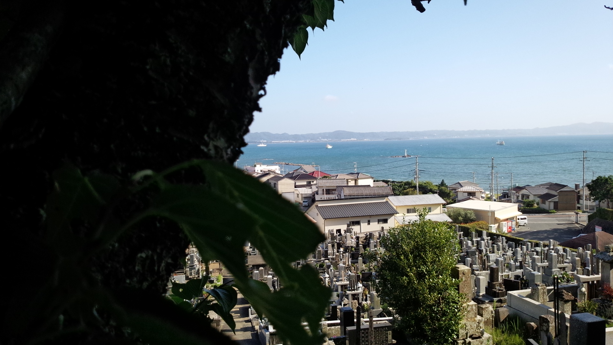

館山レンタサイクルの旅
2018/7/5 旅・散歩何日か前のことになるけど、めちゃめちゃいい天気の日があったから房総半島の先端あたりにある館山というところに行ってきた。
最寄り駅から約2時間かかった。
でも途中から窓の外の景色は完璧な青空と海と緑だったから全然苦じゃなかった。
館山についたら駅の近くにあったレンタサイクルで自転車を借りた。
電動自転車を5時間で1250円。
今回訪れた主な場所は①沖ノ島、②洲埼灯台、③大福寺の三つだった。
{kind=link}
まず沖ノ島。
沖ノ島は以前弟が行ってきたことがあったらしく、僕はその写真を見て行きたくなったから今回訪れることにした笑
館山駅から15、20分ほどで着いた。
着くまで知らなかったけど結構大きな海水浴場で、天気が良かったからか結構人がいてちょっと萎えた。
けど沖ノ島自体はすごくよかった。

茂みに隠れた神社があったり・・・

岩場で海を眺めながら食べる昼ご飯は最高だった。
沖ノ島を探索した後、洲埼灯台に向かった。
途中で目立つ神社があったから潜入。

奥の方に看板があって、どうやら小さな洞窟の中になんかが祀られてるらしいんだけど、封鎖してあって見れなかった。
結構広い敷地なのに僕以外誰もいなかった。
境内に苔むした30cmくらいの石が置いてあって近くに看板があったから読んでみたら、その石は昔近辺に住んでた悪い大蛇を討伐するときに使った剣を研いだ砥石らしい。
こういう地元民しか知らないようなローカル伝説話はすごい好き笑
誰が考えたんだろう
神社でリフレッシュした後残りの海岸線沿いの道をたどって灯台に向かった。
房総半島の先端に向かうにつれて巨大な別荘が多くみられた。
海はきれいだし自然も多いから僕もお金持ちになったらこの辺に別荘ほしいなと思った。
そんなことを考えてるうちについた。
この灯台は東京湾の入り口を示す二つの灯台のうちの一つらしい。
もう一つは神奈川側にあるのかな？

灯台からの景色。海と空が青い。

海沿いの公園にあった主張の強い看板。

ここで一息ついた後、館山駅まで戻ったあと通り過ぎて数キロいったとこにある大福寺に向かった。
結構暑かったから館山駅に戻った時点で「このまま電車乗っちまいてェ～～」とか思ったけどそんな弱音は封じ込めた笑
そしてやっと大福寺についた。
写真じゃ見えにくいかもしれないけど大福寺は崖に埋め込まれるように建てられてる。
{kind=link}
何度も改修工事されてるだろうけど、最初に建てられたのは717年らしい。
そんな時代に崖のに寺を埋め込むなんてよくできたなと思う。
2018年に生きる僕でさえどうやって建てるのか見当もつかないのに。
寺に続く階段からとった海と町の写真。
{kind=link}
手前に葉っぱとか入れてみるけど微妙だった笑
崖の中の寺から景色を眺めて落ち着いた後、館山駅に戻って家路についた。
ほんとにいいところだったから是非また行きたい。
一番有名な鋸山を訪れてないし、夜になったら天の川も見れるらしいからそれも見に行きたい。